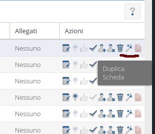

Duplicando una scheda si otterrá una nuova scheda che conserverà le informazioni principali relative alla scheda d'origine. Ovviamente dati come, eventuali campioni o catture dovranno essere reinseriti.
Per duplicare una scheda basta cliccare sull'icona Duplicascheda situata nella colonna delle azioni della tabella delle schede nel tab Schede.

Dopo aver cliccato sull'icona, una finestra chiederà di inserire la data della nuova scheda e di confermare la duplicazione cliccando sul tasto "Esegui". A questo punto la nuova scheda comparirá nell'elenco e potrá essere completata.